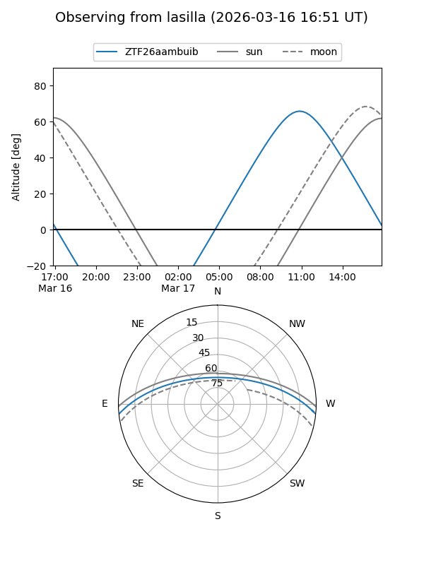
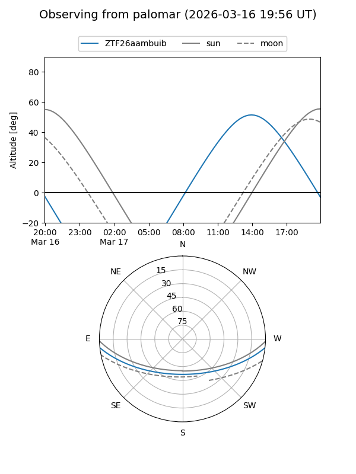

ZTF26aambuib
Target ZTF26aambuib at 2026-03-16 13:55
Aliases and brokers:
FINK: link
Lasair: link
ALeRCE: link
alt names
ZTF26aambuib (ztf,fink_ztf)
Coordinates:
equatorial (ra, dec) = 267.0108,-5.11589
equatorial (HMS+DMS) = 17:48:02.60,-05:06:57.20
galactic (l, b) = (20.9473,+11.62028)
Flags:
Photometry:
last ztfg=17.17
1 ztfg detections
Lightcurve
Visibility


Additional plots